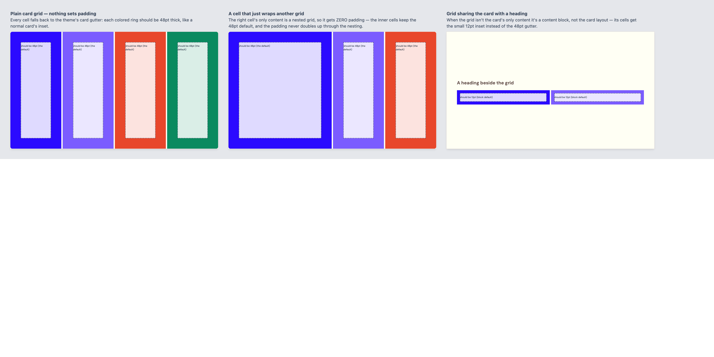
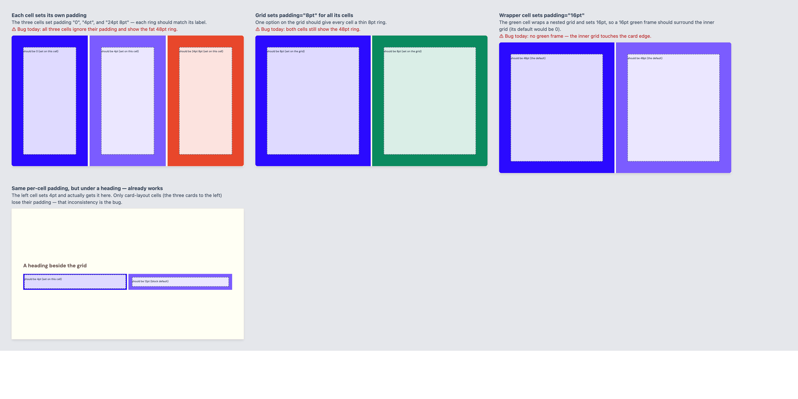
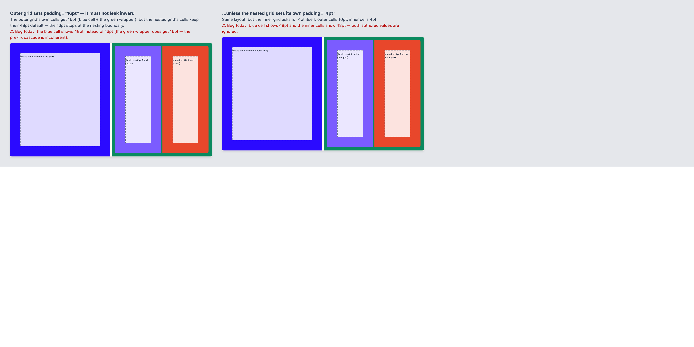
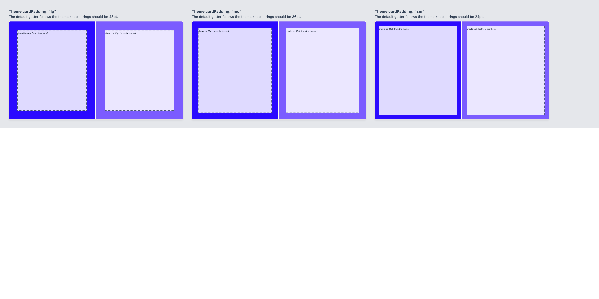

Storybook Components/Grid/Padding before the grid.css fix. Each colored ring is a
cell's ACTUAL padding; the in-cell label states what it SHOULD be. Red "Bug today" lines mark
where the current render violates the contract (authored padding losing to the data-pad role
defaults on card-layout cells).
— correct today; the baseline the fix must not change
— THE BUG: authored padding ignored on card-layout cells
— grid-level padding: partially applied, incoherently
— correct today; default tracks the theme's cardPadding knob